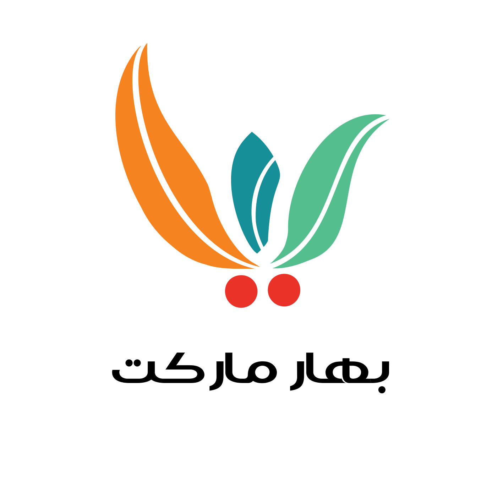
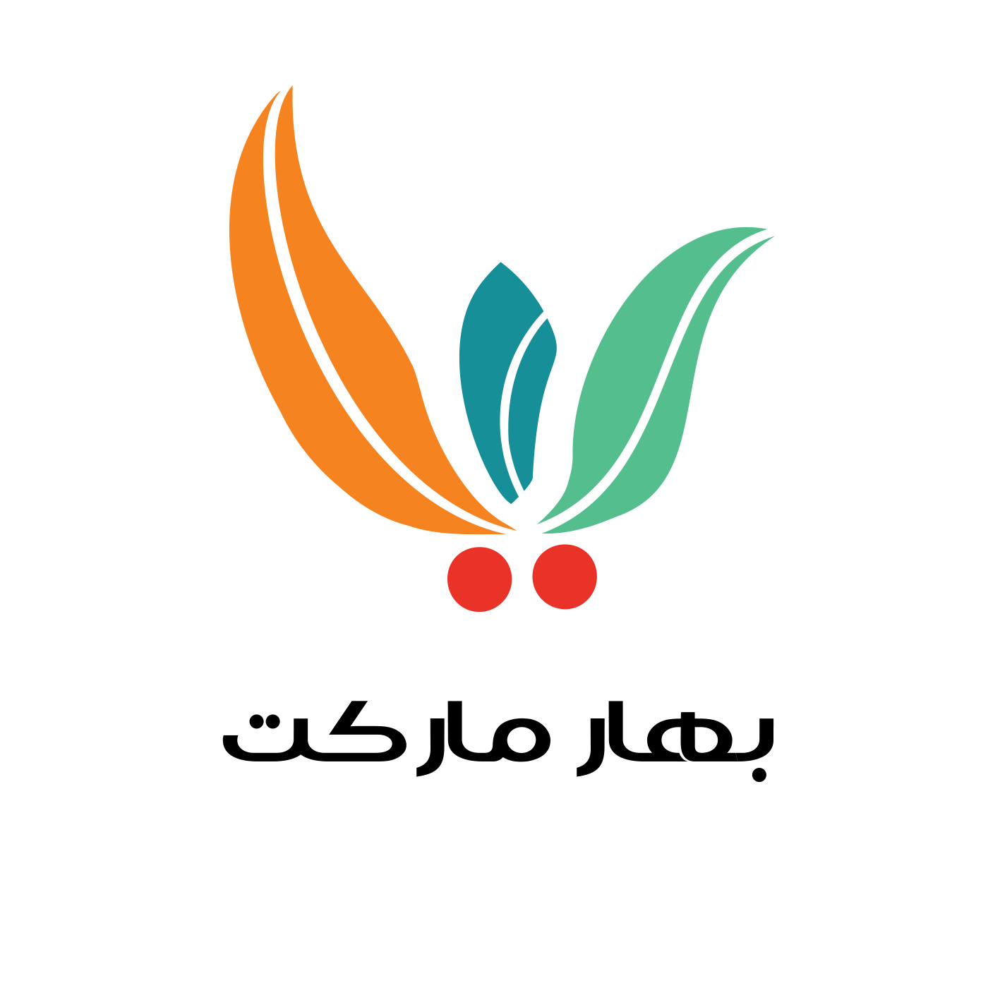

درباره من
سلام، من عرفان فهرستی هستم. 26 سال دارم و در حال حاضر در حوزه یادگیری فرانت اند فعالیت می کنم. همچنین تجربه ای در طراحی گرافیک و تدوین ویدیو دارم. با تکنولوژی های مربوط به وب از جمله HTML، CSS و JavaScript آشنایی دارم و در حال گسترش دانشم در زمینه فریمورک های مانند React و Vue.js هستم. در انجام پروژه ها، توانایی همکاری در تیم و ارائه راه حل های خلاقانه را دارم. همچنین، دقت و دقت در جزئیات برای من بسیار مهم است. من علاقه مند هستم که در یک محیط پویا و هیجان انگیز کار کنم و با تیمی از حرفه ای ها همکاری داشته باشم. من تمام تلاش خود را برای بهبود مهارت هایم و یادگیری فناوری های جدید می کنم. اگر به دنبال یک همکار خلاق، مسئولیت پذیر و با انگیزه هستید، من علاقه مندم درباره فرصت های شغلی در شرکت شما بیشتر بدانم. با تشکر از وقتی که گذاشتید و منتظر پیشنهادهای شما هستم.


 
